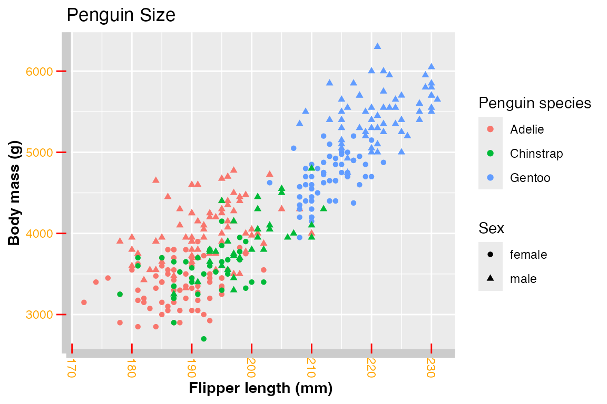
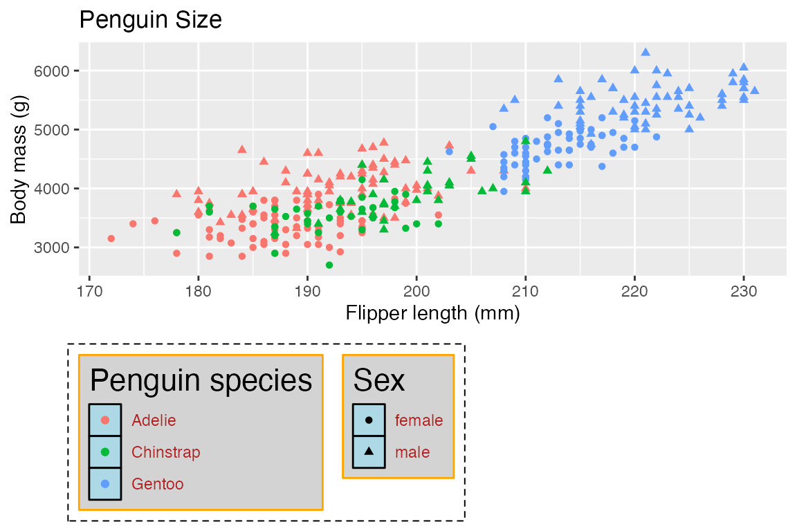
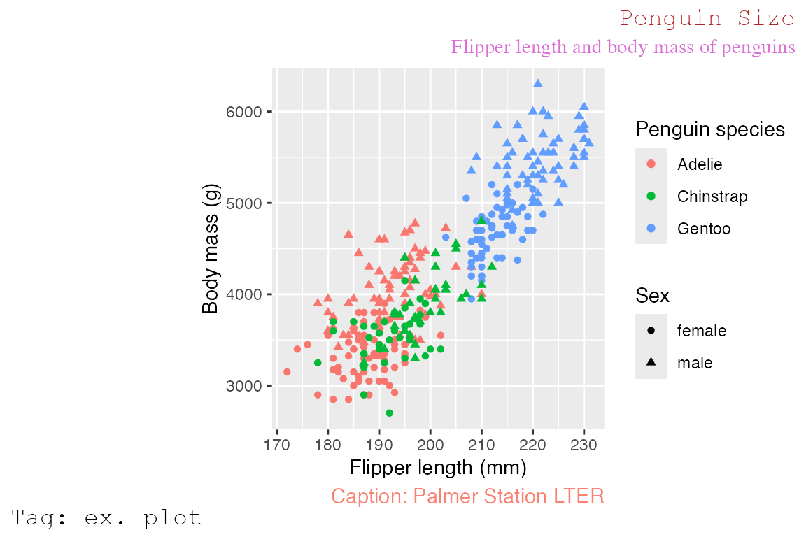
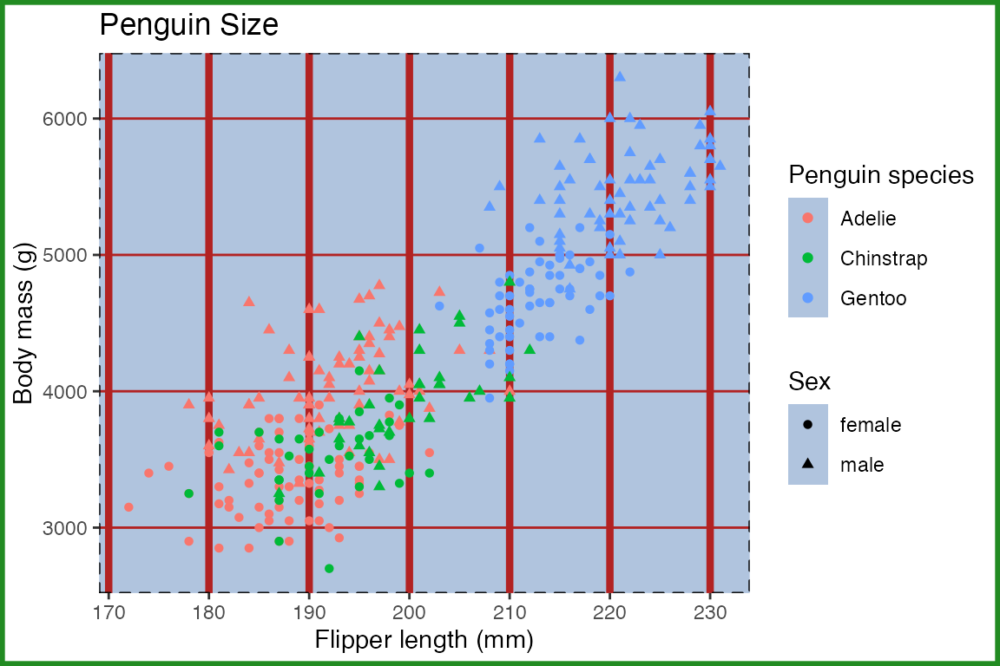
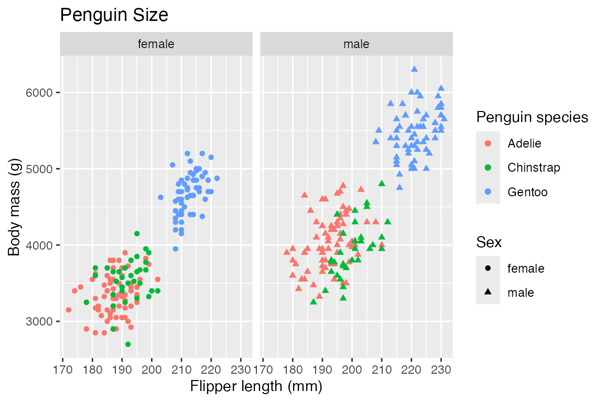
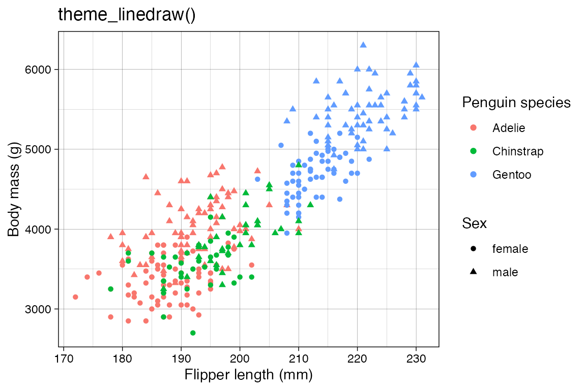
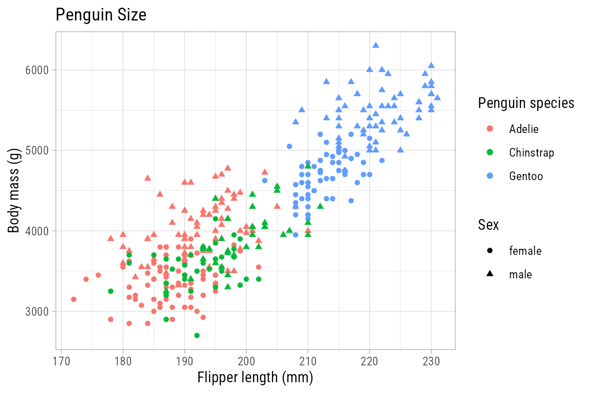
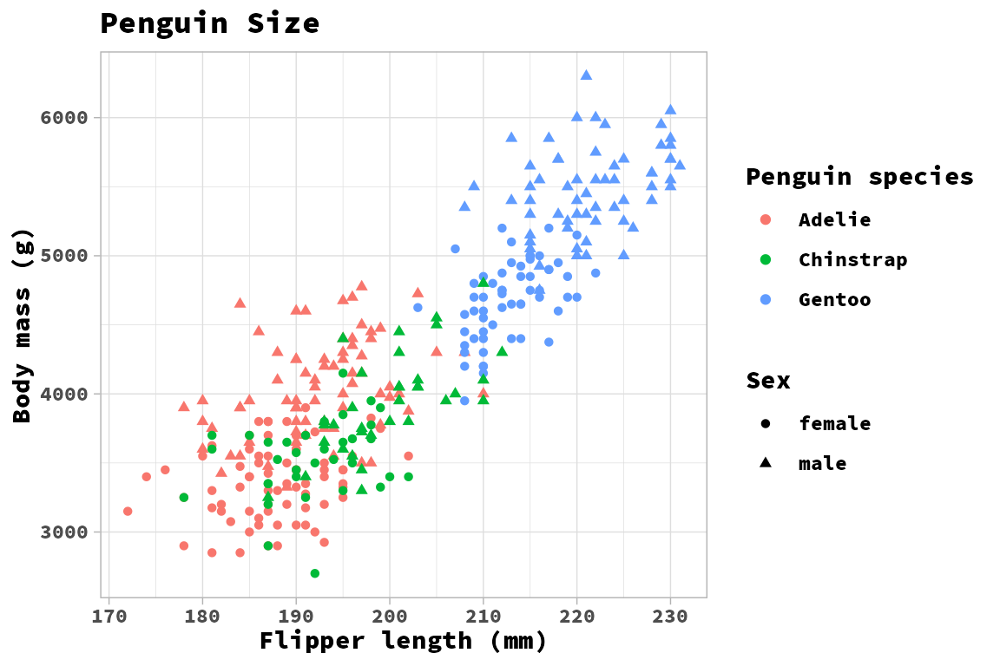
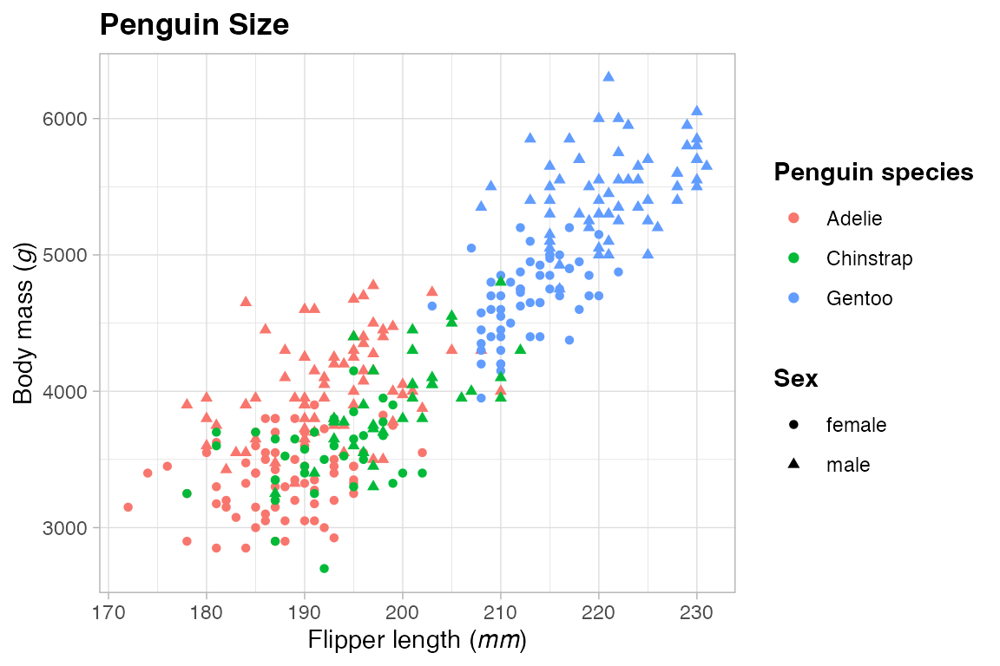

library(ggplot2)
library(dplyr)
library(palmerpenguins)
library(systemfonts)
library(ggtext)
library(glue)
# Base plot
p <- penguins |>
filter(!is.na(flipper_length_mm),
!is.na(sex)) |>
ggplot(aes(x = flipper_length_mm,
y = body_mass_g,
color = species,
shape = sex)) +
geom_point() +
labs(title = "Penguin Size",
x = "Flipper length (mm)",
y = "Body mass (g)",
color = "Penguin species",
shape = "Sex")23 Themes
Themes affect the aesthetics of non-data components of plots: i.e. titles, labels, fonts, background, grid lines, and legends.
23.1 Resources
- theme() documentation
- theme() code
- Theme elements functions
- Wickham, ggplot2 book: Themes
- R for Data Science: Communication, Themes
- Scherer, ggplot2 Tutorial: Themes
- Thomas Mock - Creating and using custom ggplot2 themes
- ggplot2 Theme Elements Reference Sheet
ggplot2 Theme Elements

23.2 Base plot
Default plot uses theme_grey()
23.3 Theme inheritance
Theme elements inherit properties from other theme elements hierarchically. For example, axis.title.x.bottom inherits from axis.title.x which inherits from axis.title, which in turn inherits from text. All text elements inherit directly or indirectly from text; all lines inherit from line, and all rectangular objects inherit from rect. This means that you can modify the appearance of multiple elements by setting a single high-level component.
23.4 Theme elements
Theme elements documentation: These functions are used to modify arguments in theme().
-
element_blank(): draws nothing, and assigns no space. -
element_rect(): borders and backgrounds.- Arguments: fill, color, linewidth, linetype
-
element_line(): lines.- Arguments: fill, color, linewidth, linetype, lineend, arrow
-
element_text(): text.- Arguments: family, face, color, size, hjust, vjust, angle, lineheight, margin
-
rel(): Specify sizes relative to the parent- e.g.
plot.title = element_text(size = rel(2))to make size of plot title twice as big.
- e.g.
margin(t = 0, r = 0, b = 0, l = 0, unit = "pt")
23.5 Components of a theme
Arguments in theme(). Not all levels of the argument hierarchy are presented here.
23.5.1 General
High level arguments in the theme hierarchy:
-
rect:element_rect() -
line:element_line() -
text:element_text() -
title:element_text()all title elements: plot, axes, legends -
aspect.ratio: aspect ratio of the panel
23.5.2 Axes
-
axis.title: title of axes -
axis.text: tick labels along axes -
axis.ticks: tick markselement_line() -
axis.line: lines along axes
p +
theme(axis.title = element_text(face = "bold"),
axis.text = element_text(color = "orange"),
axis.text.x = element_text(angle = -90, vjust = 0.5,
margin = margin(t = 3)),
axis.ticks = element_line(color = "red"),
axis.ticks.length.y = unit(0.25, "cm"),
axis.ticks.length.x = unit(-0.25, "cm"),
axis.line = element_line(linewidth = 3, colour = "grey80")
)
23.5.3 Legend
For a full discussion of legends see Chapter 21 and specifically Section 21.9.
Remove legend
p +
theme(legend.position = "none")
Legend arguments
- Legend layout: see Section 21.5
-
legend.position: the position of legends –"none","left","right","bottom","top", or two-element character or numeric vector -
legend.direction:"horizontal"or"vertical" -
legend.justification: anchor point for positioning legend
-
- Bounding box of all legends
-
legend.box: arrangement of multiple legends ("horizontal"or"vertical") -
legend.box.background: background of full legend area -
legend.box.just: justification of each legend within the overall bounding box -
legend.box.margin: margins around the full legend bounding box -
legend.box.spacing: The spacing between the plotting area and the full legend bounding box
-
- Bounding box of each legend
legend.background-
legend.margin: the margin around each legend -
legend.spacing: spacing between legends if there are multiple legends
- Legend keys: see Section 21.6.3
-
legend.key: background underneath legend keys (symbols of geoms) -
legend.key.size,legend.key.height, andlegend.key.width
-
- Legend text: see Section 21.7
-
legend.text: legend item labels -
legend.text.align: alignment of legend labels (number from 0 (left) to 1 (right)) -
legend.title: legend title -
legend.title.align: alignment of legend title
-
p +
theme(legend.position = "bottom",
legend.direction = "vertical",
legend.justification = "left",
legend.box.background = element_rect(linetype = "dashed"),
legend.box.margin = margin(6, 6, 6, 6),
legend.background = element_rect(color = "orange", fill = "lightgrey"),
legend.key = element_rect(fill = "lightblue", color = "black"),
legend.title = element_text(size = rel(1.5)),
legend.text = element_text(color = "firebrick")
)
Place legend in the plot by positioning it at the bottom-right of the plot with legends justified to the right.
23.5.4 Plot title and metadata
Plots can have a number of plot labels: title, subtitle, caption, and tag.
-
plot.title-
plot.title.position: Applies to both title and subtitle-
"panel"(default): Aligns to plotting region -
"plot": Aligns to entire plot
-
-
plot.subtitle-
plot.caption: caption below the plot -
plot.tag: upper-left label to identify a plot-
plot.tag.position:"topleft","top","topright","left","right","bottomleft","bottom","bottomright", or a coordinate
-
p +
labs(subtitle = "Flipper length and body mass of penguins",
caption = "Caption: Palmer Station LTER",
tag = "Tag: ex. plot") +
theme(plot.title.position = "plot",
plot.title = element_text(hjust = 1,
color = "firebrick",
family = "mono"),
plot.subtitle = element_text(hjust = 1,
color = "orchid",
family = "serif"),
plot.caption = element_text(color = "salmon", size = 11),
plot.caption.position = "panel", # the default
plot.tag = element_text(family = "mono"),
plot.tag.position = "bottomleft")
23.5.5 Panel: Plotting area
The panel encompasses the area in which the data is plotted. The main elements that will be changed are the color of the background (panel.background) and the major and minor grid drawn on the panel (panel.grid).
-
panel.background: background of plotting area, drawn underneath plot -
panel.border: border around plotting area, drawn on top of plot so that it covers tick marks and grid lines.- Therefore you need to assign
fill = NAwhen overridingpanel.border.
- Therefore you need to assign
-
panel.grid:element_line()panel.grid.majorpanel.grid.minor
-
panel.ontop:logicaloption to place the panel (background, gridlines) over the data layers.
Note the difference between the panel, which has a fill of “lightsteelblue†and outlined in a dotted line, and the plot, which is outlined in “forestgreen”.
p +
theme(panel.background = element_rect(fill = "lightsteelblue"),
panel.border = element_rect(linetype = "dashed", fill = NA),
panel.grid.major = element_line(color = "firebrick"),
panel.grid.major.x = element_line(linewidth = 1.5),
panel.grid.minor = element_blank(),
plot.background = element_rect(color = "forestgreen", linewidth = 2)
)
23.5.6 Plot: Whole area of the plot
-
plot.background: background of the entire plot -
plot.margin: margin around entire plot
As above, notice the difference between the panel and the plot. The panel fill is “transparent†(can also use NA) to show plot.background covers the whole plot area.
p +
theme(panel.background = element_rect(fill = "transparent",
color = "forestgreen",
linewidth = 2),
plot.background = element_rect(fill = "lightsteelblue",
color = "black",
linetype = "dashed"),
plot.margin = margin(t = 0.5, r = 1, b = 0.5, l = 1, unit = "cm")
)23.5.7 Facets: Strip
-
strip.background: Background of panel strips (element_rect()) -
strip.text: Text in the strips -
strip.placement: placement of strip with respect to axes, either “inside†or “outside”. Only important when axes and strips are on the same side of the plot. -
panel.spacing: spacing between facet panels
p +
facet_wrap(~ sex)
p +
facet_wrap(~ sex) +
theme(strip.background = element_rect(fill = "ivory", color = "salmon"),
strip.text = element_text(color = "firebrick"),
panel.spacing = unit(1, "lines")
)23.6 Complete themes
Documentation for complete themes
-
theme_gray(): default theme_bw()theme_linedraw()theme_light()theme_dark()theme_minimal()theme_classic()theme_void()
A good way to explore aspects of themes is to look at the code of the theme functions. Use theme_grey to explore all aspects of the default themes. See also the code for themes on GitHub.
Theme arguments: Changes to text size, text font, lines, and rects.
base_size = 11base_familybase_line_size = base_size/22base_rect_size = base_size/22
theme_bw
#> function (base_size = 11, base_family = "", base_line_size = base_size/22,
#> base_rect_size = base_size/22)
#> {
#> theme_grey(base_size = base_size, base_family = base_family,
#> base_line_size = base_line_size, base_rect_size = base_rect_size) %+replace%
#> theme(panel.background = element_rect(fill = "white",
#> colour = NA), panel.border = element_rect(fill = NA,
#> colour = "grey20"), panel.grid = element_line(colour = "grey92"),
#> panel.grid.minor = element_line(linewidth = rel(0.5)),
#> strip.background = element_rect(fill = "grey85",
#> colour = "grey20"), legend.key = element_rect(fill = "white",
#> colour = NA), complete = TRUE)
#> }
#> <bytecode: 0x111701990>
#> <environment: namespace:ggplot2>23.6.1 Light themes
The light themes are all very similar. theme_bw() and theme_linedraw() have a black border around the plot panel. The other differences are in the width and color of the grid lines.
Code
p +
ggtitle("theme_linedraw()") +
theme_linedraw()
Code
p +
ggtitle("theme_light()") +
theme_light()23.6.2 Minimal themes
None of these themes have a panel border. theme_minimal() has grid lines. theme_classic() does not have grid lines and has x- and y-axis lines. theme_void() is completely empty.
Code
p +
ggtitle("theme_minimal()") +
theme_minimal()
Code
p +
ggtitle("theme_classic()") +
theme_classic()Code
p +
ggtitle("theme_void()") +
theme_void()23.6.3 Theme packages
23.7 Setting themes
-
theme_set(): completely overrides the current theme. -
theme_update(): Update individual elements of a plot. Any unspecified values in the theme element will default to the values set in the current theme. -
theme_replace(): Modifies a particular element of the current theme using the%+replace%operator to completely replace the element, so any unspecified values will overwrite the current value in the theme withNULL.
theme_update() also returns the previous theme parameters, so you can easily restore the original parameters once you are done by using theme_set() again.
# Set theme for remaining plots
theme_set(theme_light())
# Update theme
og_theme <- theme_update(
panel.grid.minor = element_blank(),
plot.title = element_text(face = "bold"),
legend.position = "top",
legend.box = "vertical",
legend.box.just = "left",
legend.spacing = grid::unit(0, "lines"),
plot.title.position = "plot"
)
pReturn to old theme.
theme_set(og_theme)
p23.7.1 Reusing themes
Since update_theme() essentially uses +, the function and the operator can be used somewhat interchangeably. This opens up the ability to save a theme layer and reuse it just as you would with any other plot layer.
# Save theme layer
my_theme <- theme_light() +
theme(panel.grid.minor = element_blank(),
plot.title = element_text(face = "bold"),
legend.position = "bottom",
plot.title.position = "plot")
p + my_theme
23.8 Fonts
The packages systemfonts and ragg from Posit work together to give RStudio access to the fonts on your system and use them within plots. This works seemlessly for the most part once you install the packages and tell RStudio to use AGG as its graphic device. This is done in Settings -> General -> Graphics -> Backend. To use ragg in knitr and quarto set knitr::opts_chunk$set(dev = "ragg_png").
Use system_fonts() to list all fonts available on your system. A good workflow is to look for family of fonts using stringr::str_detect().
system_fonts() |>
filter(stringr::str_detect(family, "Garamond")) |>
select(-path)
#> # A tibble: 10 × 8
#> index name family style weight width italic monospace
#> <int> <chr> <chr> <chr> <ord> <ord> <lgl> <lgl>
#> 1 1 EBGaramondItalic-Medium EB Gara… Medi… medium norm… TRUE FALSE
#> 2 3 EBGaramondItalic-Bold EB Gara… Bold… bold norm… TRUE FALSE
#> 3 4 EBGaramondItalic-ExtraBold EB Gara… Extr… ultra… norm… TRUE FALSE
#> 4 1 EBGaramondRoman-Medium EB Gara… Medi… medium norm… FALSE FALSE
#> 5 0 EBGaramond-Regular EB Gara… Regu… normal norm… FALSE FALSE
#> 6 0 EBGaramond-Italic EB Gara… Ital… normal norm… TRUE FALSE
#> 7 3 EBGaramondRoman-Bold EB Gara… Bold bold norm… FALSE FALSE
#> 8 2 EBGaramondItalic-SemiBold EB Gara… Semi… semib… norm… TRUE FALSE
#> 9 4 EBGaramondRoman-ExtraBold EB Gara… Extr… ultra… norm… FALSE FALSE
#> 10 2 EBGaramondRoman-SemiBold EB Gara… Semi… semib… norm… FALSE FALSEp +
theme_light(
base_family = "EB Garamond")
p +
theme_light(
base_family = "Roboto Condensed")
23.8.1 Registering font variants
There may be times when you want to use a certain variant of a font. You can do this with either register_font() or register_variant(). For instance, you can get access to the Black variant of Source Code Pro. You first need to find the font with system_fonts() and then register it with a new name, here “Source Code Black”. You can then use that name as the base_family.
system_fonts() |>
filter(family == "Source Code Pro") |>
select(name, weight)
#> # A tibble: 14 × 2
#> name weight
#> <chr> <ord>
#> 1 SourceCodePro-Bold bold
#> 2 SourceCodePro-Regular normal
#> 3 SourceCodePro-Light normal
#> 4 SourceCodePro-Black heavy
#> 5 SourceCodePro-Medium medium
#> 6 SourceCodePro-MediumIt medium
#> 7 SourceCodePro-BlackIt heavy
#> 8 SourceCodePro-BoldIt bold
#> 9 SourceCodePro-Semibold semibold
#> 10 SourceCodePro-ExtraLight light
#> 11 SourceCodePro-SemiboldIt semibold
#> 12 SourceCodePro-LightIt normal
#> 13 SourceCodePro-It normal
#> 14 SourceCodePro-ExtraLightIt light
register_variant(
name = "Source Code Black",
family = "Source Code Pro",
weight = "heavy")
registry_fonts() |>
select(family, style)
#> # A tibble: 4 × 2
#> family style
#> <chr> <chr>
#> 1 Source Code Black Regular
#> 2 Source Code Black Bold
#> 3 Source Code Black Italic
#> 4 Source Code Black Bold Italicp +
theme_light(
base_family = "Source Code Pro")
p +
theme_light(
base_family = "Source Code Black")
23.9 ggtext
The ggtext package provides two theme elements functions to render markdown and HTML in plot guides. They are alternatives to element_text(). In addition, the package provides two geoms that replace geom_label(), see Section 15.6. In both the geoms and the theme elements ggtext provides two alternatives: markdown text labels and markdown text boxes with word wrapping.
The theme elements functions are element_markdown() and element_textbox() with a third option to use element_textbox_simple() that provides common defaults for element_textbox().
These theme elements will mostly be used for labeling x and y axes and for adding information to titles of plots. They work by providing these labels with marked up text and then adding element_markdown() or element_textbox_simple() to the corresponding theme argument.
23.9.1 Supported HTML
- Bold and italic fonts
- Bold:
**bold text** - Italic:
*italic text*
- Bold:
- Change fonts
<span style = 'font-size:14pt; font-family:Helvetica;'>font and size</span>
- Font color and size:
- color:
<span style='color:blue'>colored text</span> - size:
<span style='font-size:18pt'>larger text</span>
- color:
- Super and subscript text
<sup>super</sup><sub>2</sub>
- Line breaks:
<br> - Some image support
<img src="image-source.jpg" />
23.9.2 element_markdown()
Simple Markdown can be added to the labels used in the base plot by adding the Markdown in labs() and then adding element_markdown(). Making the whole labels bold accomplishes the same as can be done with theme elements, but interspersing italics is different.
p +
labs(title = "**Penguin Size**",
x = "Flipper length (*mm*)",
y = "Body mass (*g*)",
color = "**Penguin species**",
shape = "**Sex**") +
theme(plot.title = element_markdown(),
axis.title.x = element_markdown(),
axis.title.y = element_markdown(),
legend.title = element_markdown())
A common use for ggtext is to include colored text that matches the colors used within the plot as an alternative to using a legend. A good workflow to do this is to extract the color palette used in the plot and use the glue package to specify the colors to be used. An example is to remove the Species legend and place this information in the plot title/subtitle. This example creates a title and subtitle in one string. It uses CSS to define a larger font size for the title, while setting a smaller font size for the subtitle in element_markdown(). The expanded line height gives more room for both the title and subtitle. Because element_markdown() does not use word wrapping, it may be necessary to insert line breaks within the subtitle.
hex <- scales::hue_pal()(3)
styled_title <- glue(
"<span style = 'font-size:14pt'>Penguin size</span><br>
The body mass (*g*) compared to flipper length (*mm*) of<br>
<span style='color:{hex[[1]]};'>Adelie</span>,
<span style='color:{hex[[2]]};'>Chinstrap</span>, and
<span style='color:{hex[[3]]};'>Gentoo</span> penguins."
)
p +
guides(color = "none") +
labs(title = styled_title,
x = "Flipper length (*mm*)",
y = "Body mass (*g*)",
shape = "**Sex**") +
theme(plot.title = element_markdown(size = 11, lineheight = 1.2),
axis.title.x = element_markdown(),
axis.title.y = element_markdown(),
legend.title = element_markdown())Another option is to color the axis text on a bar plot by modifying the group names, in this case the species, with markup using glue(). There are a couple of tricks here. Using sort = TRUE in count() helps to keep the sequence of the palette colors consistent. Placing the colors in a column and using scale_fill_identity() ensures that the colors of the axis text are correctly aligned with the fill of the bars. fct_reorder() places the bars in descending order and reconverts the species column to a factor; glue() casts the column to class glue.
library(forcats)
penguins |>
count(species, sort = TRUE) |>
mutate(color = scales::hue_pal()(3),
species = glue(
"<span style='color:{color};'>**{species}**</span>"),
species = fct_reorder(species, n, .desc = TRUE)) |>
ggplot(aes(x = species, y = n,
fill = color)) +
geom_col() +
scale_fill_identity() +
guides(fill = "none") +
theme(axis.text.x = element_markdown())
23.9.3 element_textbox()
element_markdown() will likely cover most cases, but you can use element_textbox() or element_textbox_simple() to create text boxes that have a specific width and use word wrapping. This is useful for longer labels. For example, we can expand on the above title to include more information. If the subtitle gets long, it may be necessary to add padding to the title. This example adds 10 points to the bottom margin.
longer_styled_title <- glue(
"<span style = 'font-size:14pt'>Penguin size</span><br>
The body mass (*g*) compared to flipper length (*mm*) of
<span style='color:{hex[[1]]};'>Adelie</span>,
<span style='color:{hex[[2]]};'>Chinstrap</span>, and
<span style='color:{hex[[3]]};'>Gentoo</span> penguins
on the islands of Biscoe, Dream, and Torgersen off the
coast of Antartica."
)
p +
guides(color = "none") +
labs(title = longer_styled_title,
x = "Flipper length (*mm*)",
y = "Body mass (*g*)",
shape = "**Sex**") +
theme(
plot.title = element_textbox_simple(size = 11, lineheight = 1,
padding = margin(0, 0, 10, 0)),
axis.title.x = element_markdown(),
axis.title.y = element_markdown(),
legend.title = element_markdown()
)Text boxes can also have a background color and border. Because element_textbox() has word wrapping, the width of the box can also be restricted.
p +
guides(color = "none") +
labs(title = longer_styled_title,
x = "Flipper length (*mm*)",
y = "Body mass (*g*)",
shape = "**Sex**") +
theme(
plot.title = element_textbox_simple(
size = 11, lineheight = 1,
width = grid::unit(3, "in"), # fixed width
hjust = 1, # alignment of box relative to plot
linetype = 1, # turn on border
fill = "darkseagreen1", # background fill color
r = grid::unit(3, "pt"), # radius for rounded corners
padding = margin(5, 5, 5, 5), # padding around text inside the box
margin = margin(0, 0, 10, 0) # margin outside the box
),
axis.title.x = element_markdown(),
axis.title.y = element_markdown(),
legend.title = element_markdown()
)See Section 22.7.1 for an example of using element_textbox() to provide labels for a faceted plot.